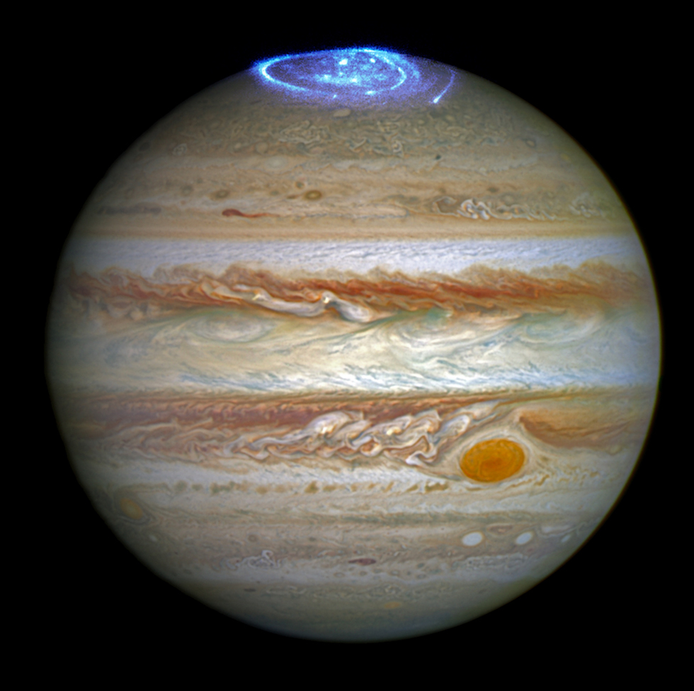
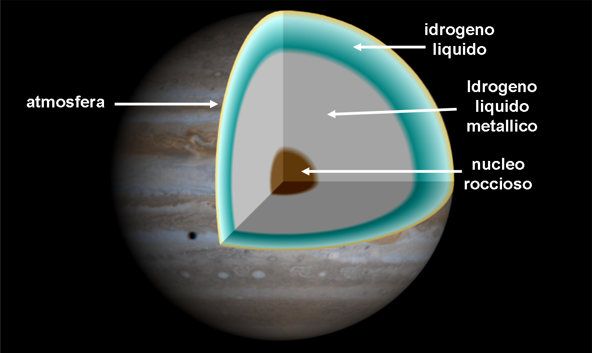
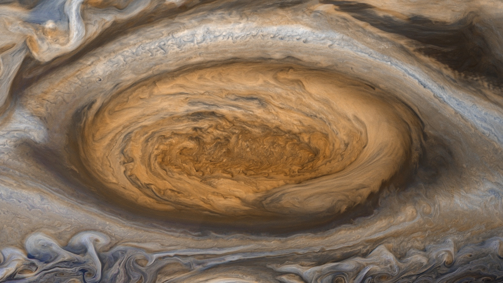

GIOVE
Giove è il quinto pianeta del Sistema solare in ordine di distanza dal Sole e il più grande di tutto il sistema planetario: la sua massa corrisponde a 2 volte e mezzo la somma di quelle di tutti gli altri pianeti messi insieme. È classificato, al pari di Saturno, Urano e Nettuno, come gigante gassoso.

Giove ha una composizione simile a quella del Sole: infatti è costituito principalmente da idrogeno ed elio con piccole quantità di altri composti, quali ammoniaca, metano ed acqua. Si ritiene che il pianeta possegga una struttura pluristratificata, con un nucleo solido, presumibilmente di natura rocciosa e costituito da carbonio e silicatidi ferro, sopra il quale gravano un mantello di idrogeno metallico ed una vasta copertura atmosferica che esercitano su di esso altissime pressioni.

L'atmosfera esterna è caratterizzata da numerose bande e zone di tonalità variabili dal color crema al marrone, costellate da formazioni cicloniche ed anticicloniche, tra le quali spicca la Grande Macchia Rossa. La rapida rotazione del pianeta gli conferisce l'aspetto di uno sferoide schiacciato ai poli e genera un intenso campo magnetico che dà origine ad un'estesa magnetosfera; inoltre, a causa del meccanismo di Kelvin-Helmholtz, Giove (come tutti gli altri giganti gassosi) emette una quantità di energia superiore a quella che riceve dal Sole.

La Grande Macchia Rossa